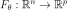
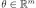
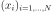
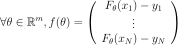

NonLinearLeastSquaresCalibration¶
- class NonLinearLeastSquaresCalibration(*args)¶
Non-linear least-squares calibration algorithm.
- Parameters
- model
Function The parametric function to be calibrated.
- inputObservations2-d sequence of float
The sample of input observations. Can have dimension 0 to specify no observations.
- outputObservations2-d sequence of float
The sample of output observations.
- candidatesequence of float
The reference value of the parameter.
- model
Notes
NonLinearLeastSquaresCalibration is the minimum variance estimator of the parameter of a given model with no assumption on the dependence of the model wrt the parameter.
The prior distribution of the parameter is a noninformative prior emulated using a flat
Normalcentered on the candidate and with a variance equal to SpecFunc.MaxScalar.The posterior distribution of the parameter is
Normaland reflects the variability of the optimum parameter depending on the observation sample. By default, the posterior distribution is evaluated based on a linear approximation of the model at the optimum. This corresponds to using theLinearLeastSquaresCalibrationat the optimum, and is named Laplace approximation in the bayesian context. However, if the key NonLinearLeastSquaresCalibration-BootstrapSize in theResourceMapis set to a nonzero positive integer, then a bootstrap resampling of the observations is performed and the posterior distribution is based on aKernelSmoothingof the sample of boostrap optimum parameters.The resulting distribution of the output error is a
Normaland is computed from the residuals.If least squares optimization algorithms are enabled, then the algorithm used is the first found by Build of
OptimizationAlgorithm. Otherwise, the algorithmTNCis used combined with a multistart algorithm which makes use of the NonLinearLeastSquaresCalibration-MultiStartSize key in theResourceMap.Examples
Calibrate a nonlinear model using non-linear least-squares:
>>> import openturns as ot >>> ot.RandomGenerator.SetSeed(0) >>> m = 10 >>> x = [[0.5 + i] for i in range(m)] >>> inVars = ['a', 'b', 'c', 'x'] >>> formulas = ['a + b * exp(c * x)'] >>> model = ot.SymbolicFunction(inVars, formulas) >>> p_ref = [2.8, 1.2, 0.5] >>> params = [0, 1, 2] >>> modelX = ot.ParametricFunction(model, params, p_ref) >>> y = modelX(x) >>> y += ot.Normal(0.0, 0.05).getSample(m) >>> candidate = [1.0]*3 >>> algo = ot.NonLinearLeastSquaresCalibration(modelX, x, y, candidate) >>> algo.run() >>> print(algo.getResult().getParameterMAP()) [2.773...,1.203...,0.499...]
Methods
BuildResidualFunction(model, ...)Build a residual function given a parametric model, input and output observations.
Accessor to the bootstrap size used to sample the posterior distribution.
Accessor to the parameter candidate.
Accessor to the object's name.
getId()Accessor to the object's id.
Accessor to the input data to be fitted.
getModel()Accessor to the model to be fitted.
getName()Accessor to the object's name.
Accessor to the optimization algorithm used for the computation.
Accessor to the output data to be fitted.
Accessor to the parameter prior distribution.
Get the result structure.
Accessor to the object's shadowed id.
Accessor to the object's visibility state.
hasName()Test if the object is named.
Test if the object has a distinguishable name.
run(*args)Launch the algorithm.
setBootstrapSize(bootstrapSize)Accessor to the bootstrap size used to sample the posterior distribution.
setName(name)Accessor to the object's name.
setOptimizationAlgorithm(algorithm)Accessor to the optimization algorithm used for the computation.
setResult(result)Accessor to optimization result.
setShadowedId(id)Accessor to the object's shadowed id.
setVisibility(visible)Accessor to the object's visibility state.
- __init__(*args)¶
- static BuildResidualFunction(model, inputObservations, outputObservations)¶
Build a residual function given a parametric model, input and output observations.
- Parameters
- Returns
- residual
Function - Residual function.
- residual
Notes
Given a parametric model  with parameter , a sample of input points  and the associated output , the residual function
 is defined by:
is defined by:
- getBootstrapSize()¶
Accessor to the bootstrap size used to sample the posterior distribution.
- Returns
- sizeint
Bootstrap size used to sample the posterior distribution. A value of 0 means that no bootstrap has been done but a linear approximation has been used to get the posterior distribution, using the
GaussianLinearCalibrationalgorithm at the maximum a posteriori estimate.
- getClassName()¶
Accessor to the object’s name.
- Returns
- class_namestr
The object class name (object.__class__.__name__).
- getId()¶
Accessor to the object’s id.
- Returns
- idint
Internal unique identifier.
- getInputObservations()¶
Accessor to the input data to be fitted.
- Returns
- data
Sample The input data to be fitted.
- data
- getName()¶
Accessor to the object’s name.
- Returns
- namestr
The name of the object.
- getOptimizationAlgorithm()¶
Accessor to the optimization algorithm used for the computation.
- Returns
- algo
OptimizationAlgorithm Optimization algorithm used for the computation.
- algo
- getOutputObservations()¶
Accessor to the output data to be fitted.
- Returns
- data
Sample The output data to be fitted.
- data
- getParameterPrior()¶
Accessor to the parameter prior distribution.
- Returns
- prior
Distribution The parameter prior distribution.
- prior
- getResult()¶
Get the result structure.
- Returns
- resCalibration:
CalibrationResult The structure containing all the results of the calibration problem.
- resCalibration:
Notes
The structure contains all the results of the calibration problem.
- getShadowedId()¶
Accessor to the object’s shadowed id.
- Returns
- idint
Internal unique identifier.
- getVisibility()¶
Accessor to the object’s visibility state.
- Returns
- visiblebool
Visibility flag.
- hasName()¶
Test if the object is named.
- Returns
- hasNamebool
True if the name is not empty.
- hasVisibleName()¶
Test if the object has a distinguishable name.
- Returns
- hasVisibleNamebool
True if the name is not empty and not the default one.
- run(*args)¶
Launch the algorithm.
Notes
It launches the algorithm and creates a
CalibrationResult, structure containing all the results.
- setBootstrapSize(bootstrapSize)¶
Accessor to the bootstrap size used to sample the posterior distribution.
- Parameters
- sizeint
Bootstrap size used to sample the posterior distribution. A value of 0 means that no bootstrap has to be done but a linear approximation has been used to get the posterior distribution, using the
GaussianLinearCalibrationalgorithm at the maximum a posteriori estimate.
- setName(name)¶
Accessor to the object’s name.
- Parameters
- namestr
The name of the object.
- setOptimizationAlgorithm(algorithm)¶
Accessor to the optimization algorithm used for the computation.
- Parameters
- algo
OptimizationAlgorithm Optimization algorithm to use for the computation.
- algo
- setResult(result)¶
Accessor to optimization result.
- Parameters
- result
CalibrationResult Result class.
- result
- setShadowedId(id)¶
Accessor to the object’s shadowed id.
- Parameters
- idint
Internal unique identifier.
- setVisibility(visible)¶
Accessor to the object’s visibility state.
- Parameters
- visiblebool
Visibility flag.